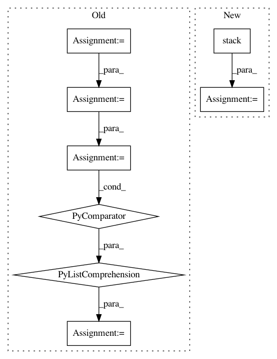

7ee5c4cc9f2224f24f8121e78fdc969a2bf754e1,OpenNMT/onmt/Models.py,Decoder,forward,#Decoder#Any#Any#Any#,102
Before Change
// h_0 = Variable(emb.data.new(*h_size).zero_(), requires_grad=False)
// c_0 = Variable(emb.data.new(*h_size).zero_(), requires_grad=False)
// hidden = (h_0, c_0)
hidden = enc_hidden
outputs = []
hidden = (hidden[0].squeeze(0), hidden[1].squeeze(0))
for emb_t in emb.chunk(emb.size(0)):
emb_t = emb_t.squeeze(0)
if self.input_feed:
emb_t = torch.cat([emb_t, output], 1)
// FIXME: multilayer
hidden = self.rnn(emb_t, hidden)
output = hidden[0]
output = self.attn(output, context.t())
output = self.dropout(output)
outputs += [output]
outputs = torch.cat([x.unsqueeze(0) for x in outputs])
return outputs
class NMTModel(nn.Container):
After Change
output = self.dropout(output)
outputs += [output]
outputs = torch.stack(outputs)
return outputs
class NMTModel(nn.Container):
In pattern: SUPERPATTERN
Frequency: 4
Non-data size: 8
Instances
Project Name: OpenNMT/OpenNMT-py
Commit Name: 7ee5c4cc9f2224f24f8121e78fdc969a2bf754e1
Time: 2017-01-11
Author: alerer@fb.com
File Name: OpenNMT/onmt/Models.py
Class Name: Decoder
Method Name: forward
Project Name: bethgelab/foolbox
Commit Name: 80cfb0e5f889c65a972ebde6c6dae4278b5e28c1
Time: 2020-02-14
Author: git@jonasrauber.de
File Name: foolbox/attacks/base.py
Class Name: MinimizationAttack
Method Name: __call__
Project Name: astorfi/TensorFlow-World
Commit Name: 874382bfb96b92dcfdd6326ba83c54ad1e9d42f2
Time: 2017-06-26
Author: amirsina.torfi@gmail.com
File Name: codes/2-basics_in_machine_learning/linear_regression/code/linear_regression.py
Class Name:
Method Name: